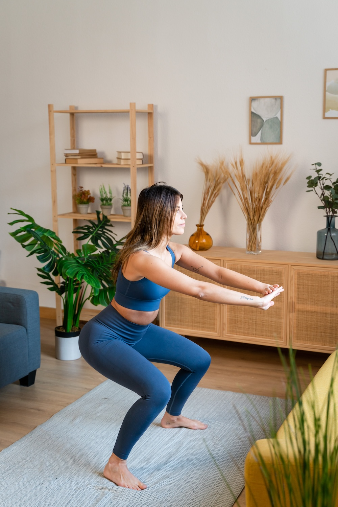
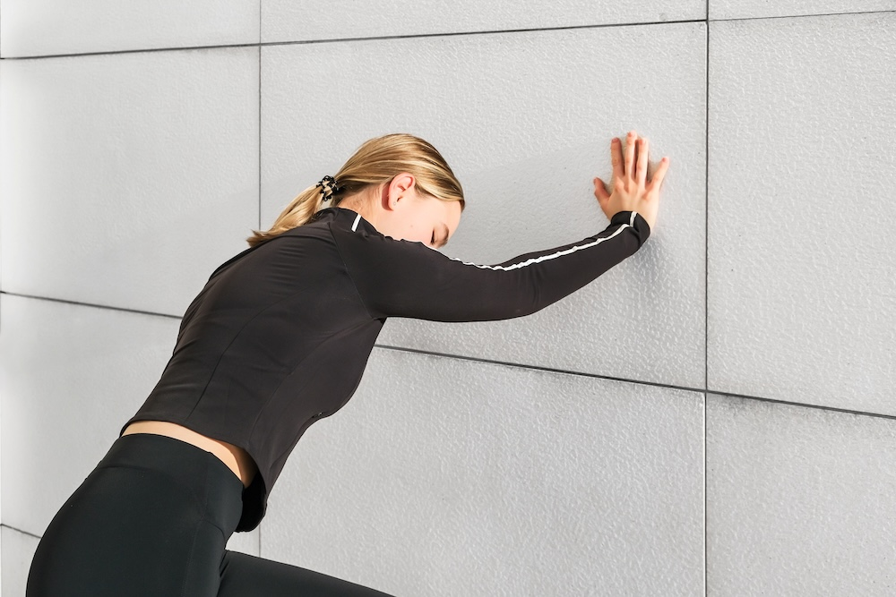
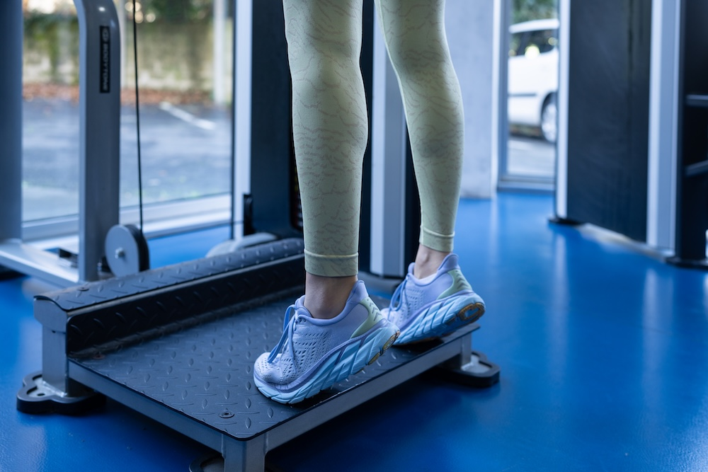
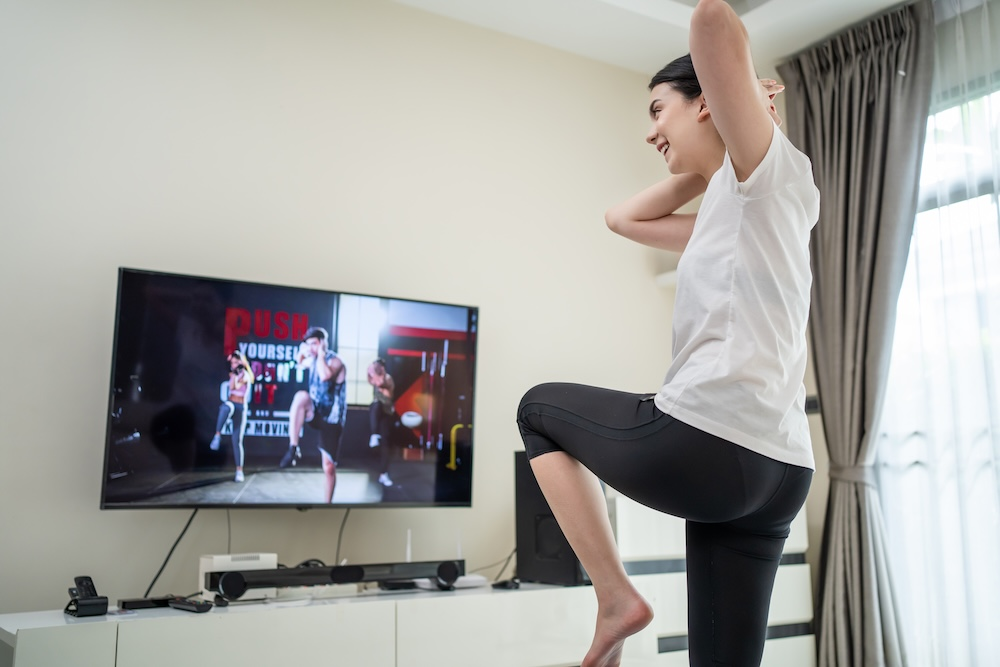

Waiting for coffee to brew.
Watching TV after dinner.
Standing in line at the grocery store.
Most women don't have hours to spend at the gym—but they do have small pockets of time throughout the day.
And that's exactly when weight loss can happen.
In 2026, women are ditching the all-or-nothing gym mentality and instead doing quick, simple exercises whenever they have a spare moment.
Here are five exercises women are squeezing into their day to lose weight—no gym, no equipment, no excuses.
Walking Whenever Possible
Walking is the easiest exercise to fit into spare time because it doesn't feel like exercise at all.
Women are finding creative ways to add more steps throughout the day:
- parking farther away from store entrances
- taking a lap around the block while on phone calls
- walking to the mailbox the long way
- pacing while waiting for appointments
These small bursts of movement add up throughout the day and can make a real difference in your overall activity level.

Every step counts—even if it's just to the kitchen and back.
Squats While Waiting
Anytime you're standing and waiting, you can do squats.
Women are doing them:
- while the microwave runs
- during TV commercials
- while brushing teeth
- waiting for water to boil
Just 10-15 squats here and there throughout the day can strengthen legs, burn calories, and tone the lower body—without ever stepping foot in a gym.

Wall Push-Ups During Breaks
Push-ups don't have to be on the floor to be effective.
Wall push-ups are perfect for spare moments because they take less than a minute and can be done anywhere there's a wall.
Women are doing them:
- during work breaks
- while waiting for the shower to warm up
- in between household tasks
Even 10-20 wall push-ups a few times a day can build upper body strength and boost metabolism.

Calf Raises While Standing
Standing in line? Washing dishes? Folding laundry?
That's the perfect time for calf raises.
Simply rise up onto your toes, hold for a second, and lower back down. Repeat 15-20 times.
It tones the calves, improves balance, and burns a few extra calories—all while doing something else.

Marching in Place During Screen Time
Watching TV doesn't have to be completely sedentary.
Women are marching in place during their favorite shows—lifting knees high, swinging arms, and keeping the body moving.
It's low-impact, easy to do, and can burn calories without interrupting your evening routine.
Even just 5-10 minutes of marching during a show can make a difference over time.
